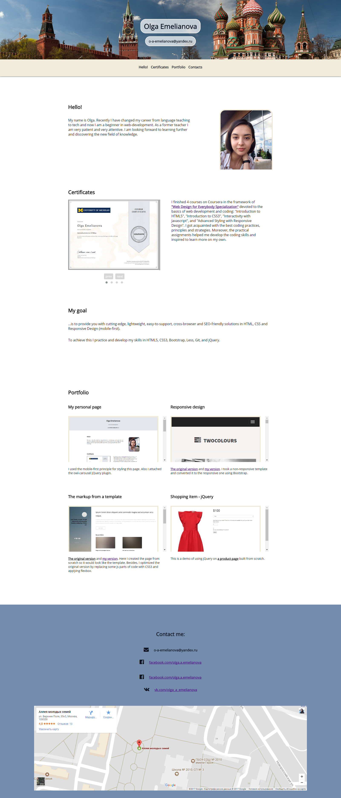

My personal page

o-a-emelianova@yandex.ru
My name is Olga and I am from Moscow. Recently my husband encouraged me to change my career from language teaching to tech and now I am a beginner in web-development. It is not easy to develop skills in the new field of knowledge, but as a former teacher I am very patient and very attentive. This page is the portfolio of my works and skills that I have worked on so far.
I finished 4 courses on Coursera in the framework of "Web Design for Everybody Specialization" devoted to the basics of web development and coding: "Introduction to HTML5", "Introduction to CSS3", "Interactivity with Javascript", and "Advanced Styling with Responsive Design". I got acquainted with the best coding practices, principles and strategies. Moreover, the practical assignments helped me develop the coding skills and inspired to learn more on my own.
...is to provide you with cutting-edge, lightweight, easy-to-support, cross-browser and SEO-friendly solutions in HTML, CSS and Responsive Design (mobile-first).
To achieve this I practice and develop my skills in HTML5, CSS3, Bootstrap, Less, Git, and jQuery.